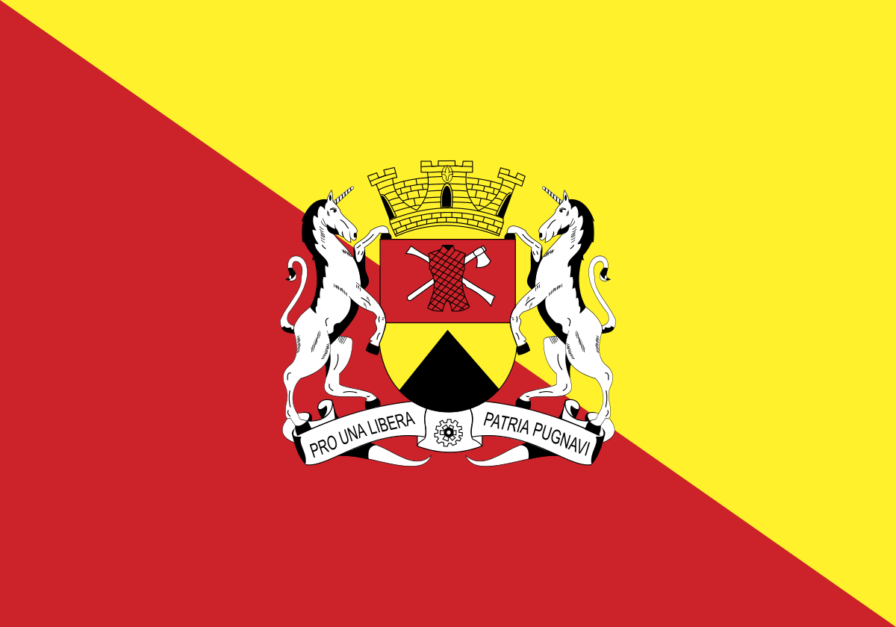

Saudamos-te, querida Sorocaba,
Com muito júbilo e acendrado amor;
desde a selva selvagem, o índio e a taba,
teus feitos cantaremos teu valor.
Às fraldas norte da Paranapiacaba,
tu te elevas Rainha d'esplendor,
e ao pé do morro d'Ouro, o Araçoiaba,
és pioneira paulista do interior.
Ó' Sorocaba, cantamos triunfantes,
bravos, heróis, cantamos teus pioneiros;
Cidade, és filha e mãe de bandeirantes,
com muito orgulho, a "Terra dos Tropeiros".
Tu és, ó Sorocaba, uma das molas
deste grande São Paulo glorioso,
cidade do Trabalho e das Escolas,
dos Liberais de brio belicoso.
Com teus arranha-céus, ao alto evolas
todo o ideal de um povo laborioso,
e o potencial fabril que hoje controlas
é o signo de um Brasil mais poderoso.
II
Tu, Sorocaba, marchas, "pari-passu"
com tuas irmãs, ao lado das primeiras,
Marchas tu com São Paulo no compasso,
Já desde os áureos tempos das bandeiras.
Foste terra de peões, campeões do laço;
Com suas tropas, com suas famosas feiras;
hoje és comércio, indústria, torres de aço,
Tudo é teu sangue, nas veias brasileiras.
Ó' Sorocaba, cantamos triunfantes,
bravos heróis, cantamos teus pioneiros;
Cidade, és filha e mãe de bendeirantes,
com muito orgulho, a "Terra dos Tropeiros".
Pela alvorada, a orquestra dos apitos,
O operário marcha ao seu mister fabril
e os homens da palavra e dos escritos,
da ciências, em teu progresso atuantes mil;
às escolas a colher frutos benditos,
a juventude marcha varonil,
O Saber e Labor marcham contritos,
em prece a Deus, pela Pátria - Brasil.